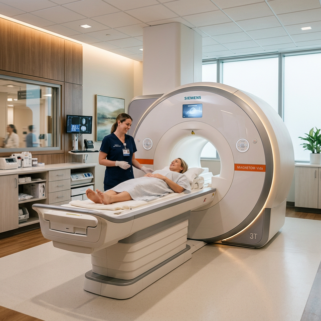

Features
Why Choose Us
清和総合病院が患者さまに選ばれ続ける、3つの強みをご紹介します。
最新鋭の3.0テスラMRI、128スライスCT、デジタルX線撮影装置をはじめ、高精度な医療機器を完備しています。これにより、がんの早期発見や心臓・脳の精密検査など、高度な診断を院内で完結できます。
装置の更新も定期的に行い、常に最高水準の検査環境を維持しています。

各診療科に、専門医資格を持つ医師が在籍。内科・外科・小児科をはじめ、多領域にわたる専門家がチーム医療で連携し、患者さま一人ひとりに最適な治療プランを提供いたします。
定期的な症例カンファレンスを実施し、診療の質を継続的に向上させています。
創立以来40年以上にわたり、地域の「かかりつけ病院」として皆さまの健康を見守ってまいりました。近隣のクリニックや専門病院との連携体制を構築し、切れ目のない医療サービスを実現しています。
市民健康講座の開催や学校検診への協力など、地域の健康増進活動にも積極的に取り組んでいます。
地域医療への貢献
常勤医師数
病床数
診療科数